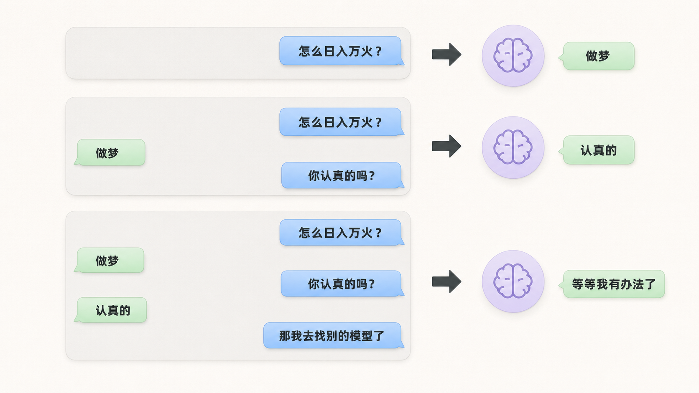
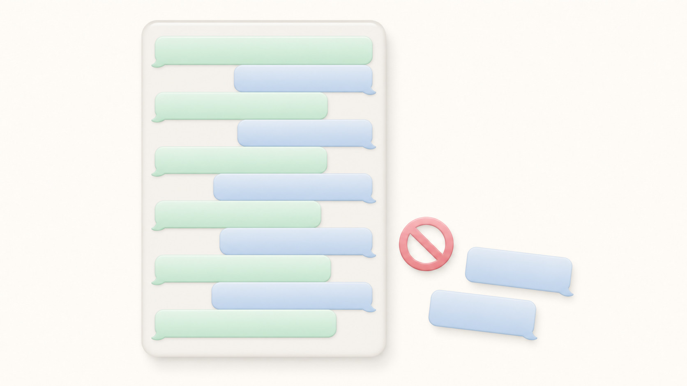
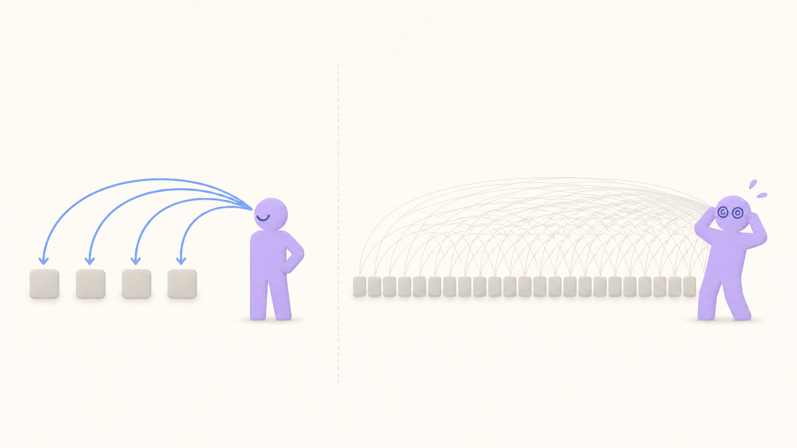
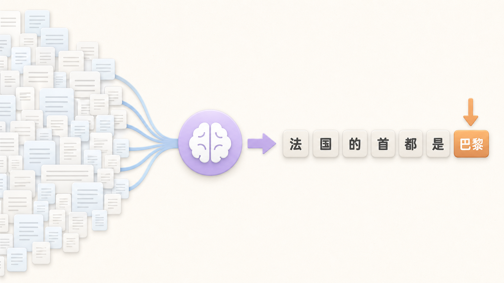

今天只聊一种 AI
基于 Transformer 的语言模型
你发一句话之后，发生了什么
怎么才能日入万火？
做梦
怎么才能日入万火？
怎么才能日入万火？做
多轮对话：每一轮都把整段历史重发一遍



拿互联网上几乎所有的文本，训练模型预测下一个词

人工写好大量高质量的「问-答」样本，训练模型按这种方式回话
不教模型怎么做，让它自己尝试，只判断结果对不对
好的 AI 任务 =
定义清晰
"做完了是什么样"能写成无歧义的一段话
模型不会读心术
信息完备
做这件事需要知道的一切，都能塞进上下文里
缺的部分全靠模型自由发挥
可验证
结果能映射成你能直接检查的标准
你亲自验，而不是 AI 告诉你"完成了"
决定上下文里有什么
系统提示词 · CLAUDE.md
工具列表 · Skill
模型
预测下一个 token
决定如何处理输出
工具调用 · Hook
向用户发送面向人的文字时，你是在给一个人写作，而不是在往控制台打日志。假设用户看不到你大部分的工具调用或思考 —— 他们只能看到你输出的文字。
⋯⋯
留意用户的专业级别的线索；显得像专家就稍微收一点，像是新人就多解释。
⋯⋯
最重要的是让读者无认知负担、无需追问就理解你的输出，而不是你有多简短。如果用户得重读总结或要你解释，那比第一遍多读几行更费时间。
"你先不急实际产出报告，先和我讨论下此方案"
知道 AI 拿到任务就开始干、不会主动问
"遇到了一个 bug，需要你帮我查下原因。赛季手册有个任务，完成 5 次狂想曲，是配置在 achievement 表的，id=25091499，但实际 QA 测试时发现，玩了狂想曲之后这个任务进度并没有改变。狂想曲是 S14 赛季玩法的一种特殊主题事件，后端事件名是 s14_complete_theme，请帮我看看问题出在哪，是不是这个事件的问题"
你提供的信息越具体，AI 就能越好地提供帮助
"整理一份表格。举例：behavior 374：用于一次性施加 buff 或持续施加 buff，在该词缀退出后会把其施加的尚存的 buff 移除"
"详细""完整"这种词没人能对齐——直接给一行样例
"请直接返回真实查询结果，不要只给方法说明。
重点关注 SSR 掉落宠及各卡池表现"
说明 AI 该跳过什么、该聚焦什么——它就不会把篇幅浪费在你不在意的地方
把自己放到 AI 的第一视角
看看它的上下文窗口里面到底有什么，完成当前任务的信息充足吗？有没有误导信息？
让它把 “解题步骤” 说出来
“你为什么会这样想？”“你是怎么得出这个结论的，一步步写给我看。”
时刻关注它的 “精神状态”
它跟得上我吗？它如果理解错了，立刻打断它：“你搞错了，我的意思是XXX。”
接纳它的 “局限性”
一次性完成不了那么多任务？那就先让它只做一小步。
上下文工程 —— 让AI更了解你
每次启动都注入 —— 放永远要遵守的规则、项目共识。
渐进式加载 —— 启动只塞一行描述，AI 判断要用时再把全文拖进来。
按路径匹配 —— 改到哪个目录、对应的那条规则才被注入，其他时候零开销。
用户手动触发 —— 一条 /cmd 把你写好的整套提示词一次性丢进上下文。
工作流节点自动触发 —— 在用户提交、工具调用等时刻自动跑脚本，注入提示或拦截行为。
派出上下文干净的子 AI —— 任务做完只传结论，过程中的杂讯都留在子上下文里。
多积累、多积累、多积累
把验证过的好表达固化下来，让它下次自动出现在 AI 的视野里。（CLAUDE.md、Skill、Commands）
对的信息在对的时候出现
上下文的加载方式，取决于 Agent 什么时候会用到这个信息。（Rules、Hook）
过时的上下文比没有更危险
上下文对于 AI 来说就是绝对真理，不要放容易过期的内容、该删就删。
必要的时候提供全新视角
上下文中的内容是价值也是负担，看看 Agents 什么时候没有前文会工作得更好。（Sub-agents、新会话）
提示词
CLAUDE.md · Skill · Rules · Commands
“不要跳过 pre-commit hook”
“编辑前先读文件”
“不要提交 .env”
建议
代码
Hooks · settings.json · 工具权限
PreToolUse Hook → deny
Edit 工具 → 必须先 Read
permissions.deny: ["Bash(git commit:*)"]
法律
明确的规则、绝不能出错的事 → 写成代码
去用，去用，去用
今天 AI 做不了的事，明天可能就能了
—— 或者给它更好的上下文就能了
什么是”正确”、”好”
永远需要你来定义
Q & A